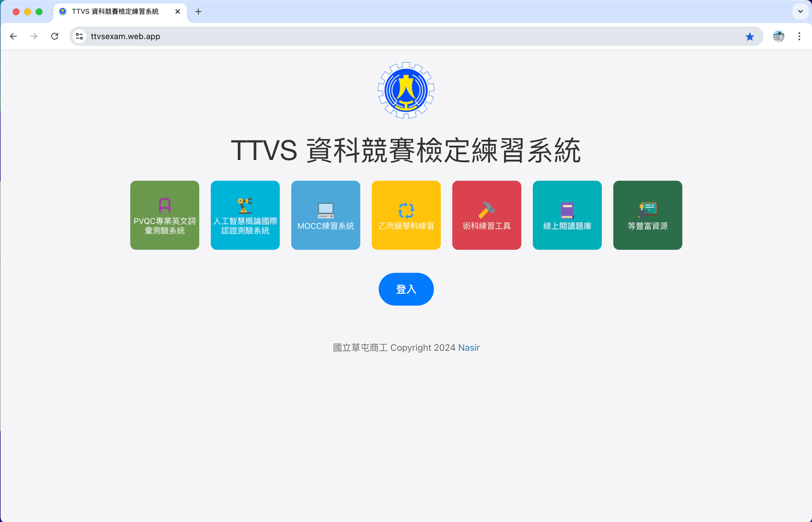
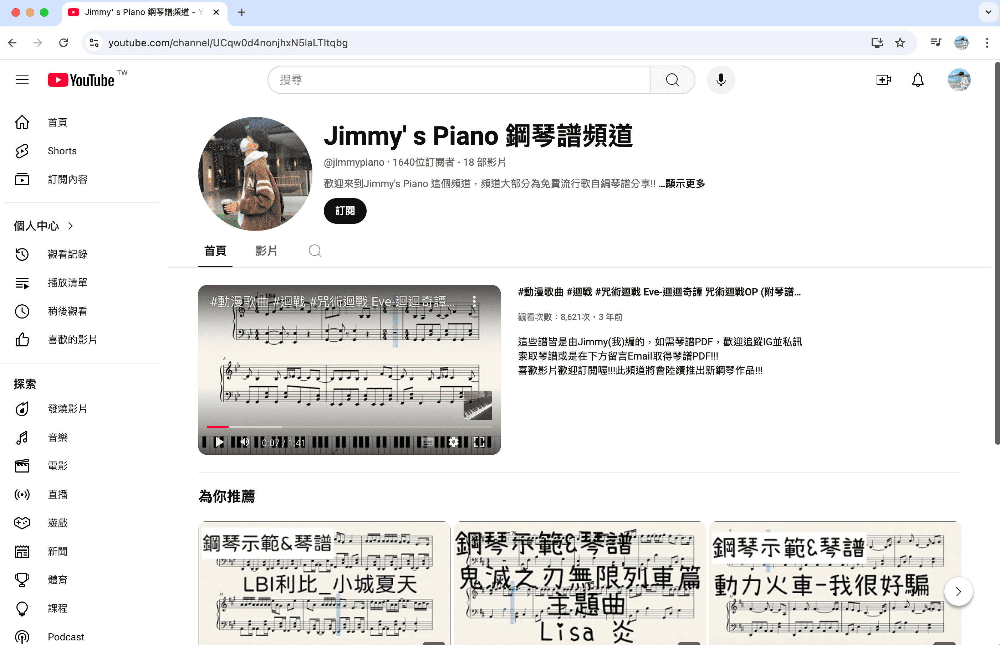

Nasir
一位自台中北漂青年，專長於資訊方面維護及應用。時代在走，創新更要有！培養資訊組裝能力！
My Blog點我前往部落格
About
🏫學歷
國立臺北商業大學 - 資訊管理系
💼經歷
曾任服裝公司主管及客服專員
112年度彰投區學生學習歷程檔案分享會發言人
🎹鋼琴作品
Jimmy’s Piano 鋼琴譜 頻道創始人，具有高達70000瀏覽量，作品超過1000多人索取使用
具教育熱誠，通過Apple Teacher Swift Playground等教育認證，運用科技融入教育裡，創新教學為未來趨勢！
作品集
🏫 校園測驗系統開發維護
🎹 Jimmy's Piano鋼琴譜頻道創辦人
證照競賽
📜專業證照
Microsoft Office Specialist PowerPoint 2016 國際原廠
Adobe Certified Professional Photoshop 2023 國際原廠
中華民國乙 / 丙級電腦軟體應用技術士
中華民國丙級人工記帳會計技術士
中華民國丙級電腦硬體裝修技術士
GLAD BAP - Word 2016 / PowerPoint 2016 國際認證
GLAD AIL人工智慧 - 國際認證
GLAD PVQC 資訊類專業英文詞彙國際認證
NCC國家通訊傳播委員會業餘無線電人員
GEPT全民英檢 初級
TQC 電子商務概論 / Linux網路管理 / 系統管理 - 專業級
TQC 雲端技術及網路服務 專業級 / PowerPoint 2016 進階級
TQC 專業Linux 系統管理工程師認證
TQC 專業Linux 網路管理工程師認證
TQC 專業行動裝置應用工程師認證
MOCC - App Inventor 程式設計 / 電子商務 / 資訊科技
Google 數位學程通過
🏆競賽經歷
2024年 「智在生活ABCD應用」競賽電腦應用組全國第一名🔥
2024年全民e化資訊運動會（春季賽）資訊科技全國第一名🔥
2024年全民e化資訊運動會（春季賽）電子商務全國第三名
2023 微軟MOS 世界盃 PowerPoint 全國總決賽 第三名🔥
2023年全國高中職簡報競賽決賽 餐飲產業B組第二名
2023年MARC 智慧自走車暨機器人創意競賽-佳作
2022年GLAD 資訊類專業英文詞彙 中區賽 金腦獎
2022年全民e化資訊運動會（秋季賽）App Inventor第五名
服務收費標準
部分資訊服務需要酌收工本費，由於時間、人力及電費等資源成本無法有效進行價值衡量，故將會酌收部分費用負擔上述資源！
資訊服務為勞務服務收入，無形資產，一切價格皆均合理且低於市面上行情價！
Nasir 皆收取為技術費用
故於2025年起，以下為價格項目表部分：
（備註：含有『起』，代表需要估價）
💁 專人服務
- 專人親自服務（含見面）（不含工本費及其他車資等）：500起 /單次
- Windows 個人電腦重灌維護（僅灌系統，需使用正版系統，本站不提供破解版）：700元 /一次性
- 辦公軟體安裝服務(OFFICE)（遠端操作含售後1個月)：400 元/一次性
- 其他客製化軟體服務（依軟體性質決定價格，浮動調整）：200起 /一次性
- 電腦疑難雜症解決（視問題嚴重性浮動調整）：200起 /一次性
💼 企業服務
- 網站協助架設（不含維護）：500起 /一次性
- 伺服器維護費用：1800 /月付型
- 個人形象網頁（前端平台式設計）：500起 /一次性
- 個人形象網頁 WP：3000元 /一次性
- 個人形象網頁（純手寫前端HTML 版）：5000起 /一次性
- 購物車網頁架設WP（純安裝及調整設計）：4000元 /一次性
- 其他客製化服務：可聯繫Nasir
💼 教育系統服務（Nasir開發團隊專利授權）
- 班級班費推播系統：150元/每學期 授權費
- 班級班費推播系統維護費：50元 /一次性
- 校園題庫刷題系統建置：1500 / 每月 授權費
- 校園題庫刷題系統維護更新：300 / 月費
- 其他客製化服務：可聯繫Nasir